Oguni
Oguni · Yamagata
Oguni
Highlighted on the Yamagata map.
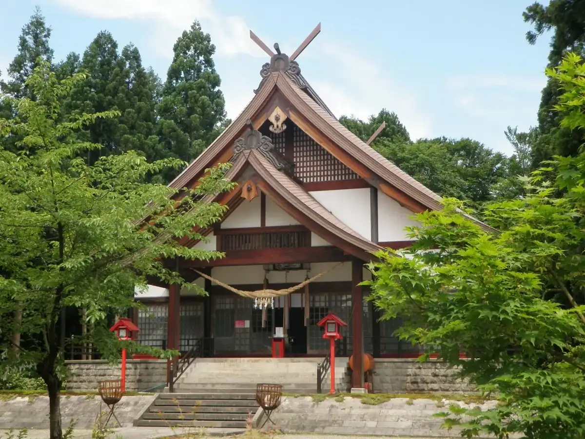
Stay
ホテルフォレストエコー
Hoteruforesutoekoo
Hotel in Oguni, Yamagata.
梅花皮荘
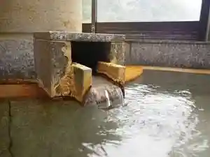
Baika Kawa Sou
Lodge in Oguni, Yamagata.
Dining
麺屋 雪国
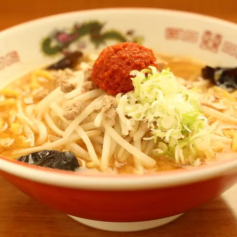
Men Ya Yukiguni
Ramen shop in Oguni, Yamagata.
福龍軒
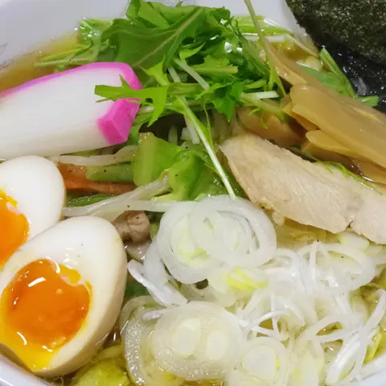
Fuku Ryuu Ken
Yakiniku (grilled meat) restaurant in Oguni, Yamagata.
道の駅 白い森おぐに
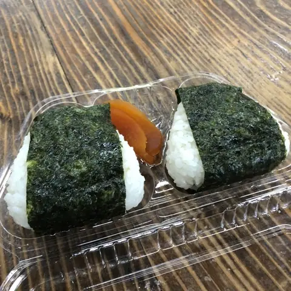
Michi No Eki Shiroi Mori Oguni
Roadside-station eatery in Oguni, Yamagata.
みよしや食堂
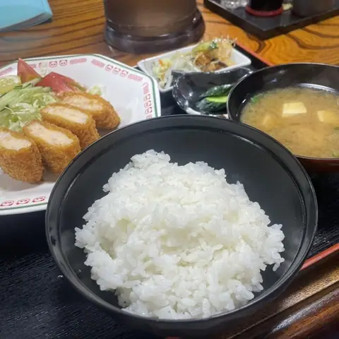
Miyoshiya Shokudou
Shokudo diner in Oguni, Yamagata.
越後屋
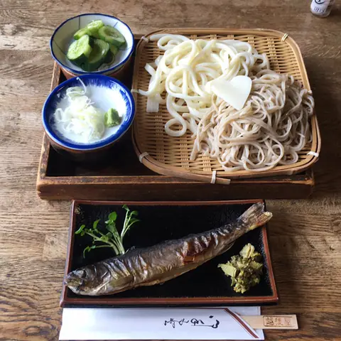
Echigoya
Local-cuisine restaurant in Oguni, Yamagata.
御食事処 ほたる
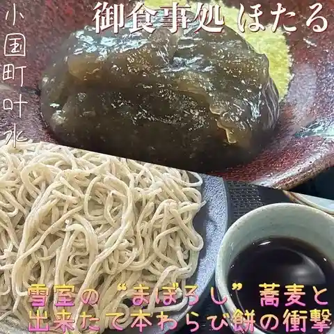
Mike Koto Tokoro Hotaru
Soba restaurant in Oguni, Yamagata.
ぶな茶屋
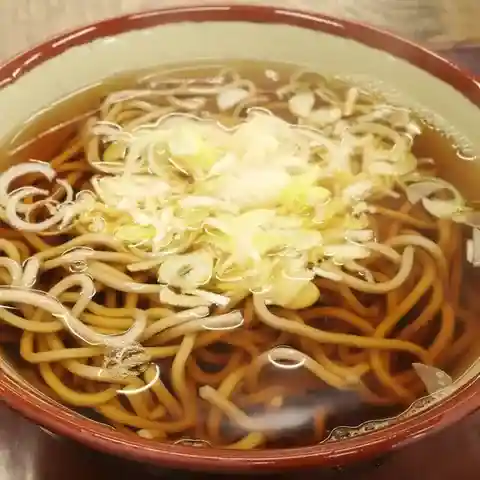
Buna Chaya
Soba restaurant in Oguni, Yamagata.
丸武
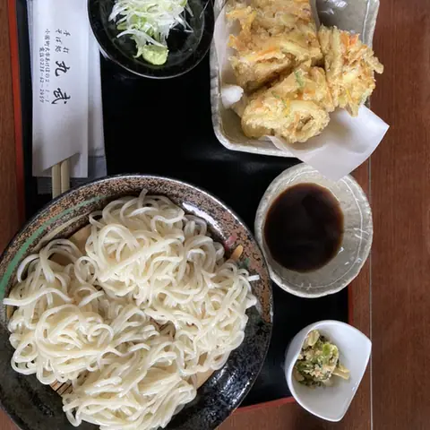
Maru Takeshi
Soba restaurant in Oguni, Yamagata.
金ちゃんラーメン 小国店
Kin Chan Raamen Shoukoku Mise
Ramen shop in Oguni, Yamagata.
田中商店
Tanaka Shouten
Ramen shop in Oguni, Yamagata.
金目そばの館
Kaneme Sobano Kan
Soba restaurant in Oguni, Yamagata.
あんびんや食堂
Anbinya Shokudou
Shokudo diner in Oguni, Yamagata.
山菜料理あいあい
Sansai Ryouri Aiai
Japanese restaurant in Oguni, Yamagata.
角松屋
Kadomatsu Ya
Japanese sweets shop in Oguni, Yamagata.
かねきん食堂
Kanekin Shokudou
Shokudo diner in Oguni, Yamagata.
愛子
Aiko
Shokudo diner in Oguni, Yamagata.
麺酒場 ひび喜
Men Sakaba Hibi Ki
Ramen shop in Oguni, Yamagata.
もつ煮 番長
Motsu Ni Banchou
Beef restaurant in Oguni, Yamagata.
またぎの館
Matagino Kan
Soba restaurant in Oguni, Yamagata.
飯豊山荘
Iide Sansou
Inn restaurant in Oguni, Yamagata.
藤よし
Fuji Yoshi
Japanese restaurant in Oguni, Yamagata.
森のめぐみ直売所
Mori Nomegumi Chokubai Tokoro
Soba restaurant in Oguni, Yamagata.
木村家菓子店
Kimura Ie Kashi Mise
Japanese sweets shop in Oguni, Yamagata.
Sights
Akashinakyo Gorge
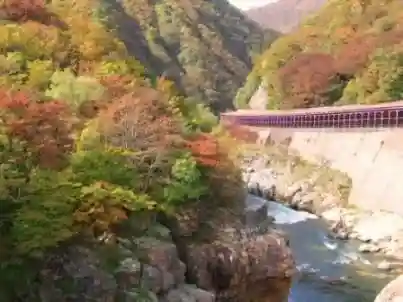
The most striking part of the Arakawa Gorge in Bandai-Asahi National Park, near the Niigata border. Its slopes of maple and beech turn red in autumn, earning it the name 'Japan's Red Cliffs'.